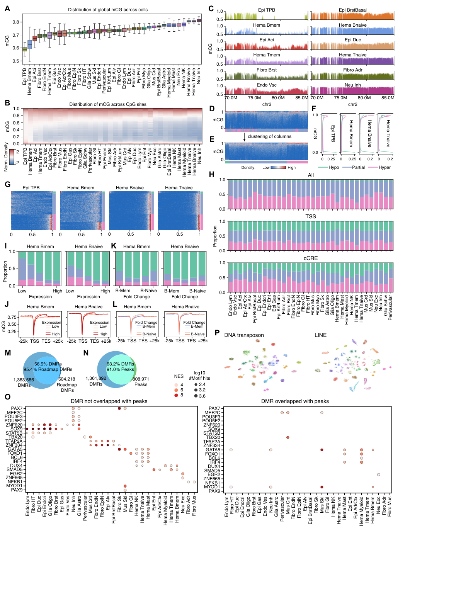

Fig. 2 — CG methylation across cell types#
Fig. 2 characterizes genome-wide mCG: partially methylated domains (PMDs) / methylation compartments, their relationship to gene expression and histone marks, differentially methylated regions (DMRs), their overlap with scATAC peaks, TF-motif enrichment, and mCG at transposable elements.

Panel → code map#
Panel |
Notebook |
Cell(s) |
What it makes |
|---|---|---|---|
2A |
c12 |
Global mCG per major type (boxplot) |
|
2B |
c29 |
Per-CpG mCG distribution per major type (heatmap) |
|
2C |
c37 (c38 ylim) |
Genome-browser mCG tracks, chr2:70–88M |
|
2D+2E |
c53 |
Endo-Vsc 10kb mCG + compartment, ordered by coord (D) / compartment (E) |
|
2F |
c54 |
mCG by compartment (Hypo/Partial/Hyper) across major types |
|
2G |
c70 |
10kb mCG ordered by 4-state compartment, all major types |
|
2H |
c17 |
Compartment fraction for all-bins / TSS / cCRE (stacked bar) |
|
2I–L |
c24, c22, c28, c26 |
Gene compartment fraction / gene-body mCG by expression (I,J) or naive-vs-memory FC (K,L) |
|
2M |
c12 |
Venn: all DMRs vs Schultz 2015 |
|
2N |
c37 |
Venn: DMRs vs scATAC peaks |
|
2O |
— |
TF-motif NES, peak vs non-peak DMRs — enrichment only, plotting cell missing (gap) |
|
2P |
c10 |
t-SNE of mCG at DNA transposons & LINEs |
Associated Extended Data figures#
Panel |
Notebook |
Cell(s) |
What it makes |
|---|---|---|---|
S9A |
c48 |
mCG + PMD calls, ALLCools vs DNMTools, chr14:44–64M |
|
S9B |
c20 |
Multi-resolution mCG histogram: all / PMD / non-PMD CpGs (Epi TPB, Hema Bmem) |
|
S9C |
c38 |
Browser mCG chr2:70–85M (same region as Fig 2C) with different y-ranges → |
|
S9D |
c70 |
10kb-bin mCG in all major types ordered by methylation compartment (+ colorbar) |
|
S10A–C |
c15, c16 |
Cross-donor 10kb mCG ordering + confusion (Mem-T, Trophoblast) |
|
S10D–E |
c64, c62 |
T-lineage (D) / B-lineage (E) memory-vs-naive compartment cross-ordering |
|
S11A–F |
c24,c22,c39,c37,c28,c26 |
Gene compartment / gene-body mCG stratified by expression, PMD/non-PMD FC, subtype FC |
|
S11G–H |
c36 |
Compartment (G) and histone-mark (H) bin-by-tissue heatmaps |
|
S12A |
c39 |
Proportion of total/major-type/subtype DMRs by distance to TSS |
|
S12B |
c69 |
mCG of DMRs across 168 subtypes, PMD types excluded (clustermap) |
|
S12C |
c65 |
Proportion of DMRs hypo (top) / hyper (bottom) in different #subtypes |
|
S13A |
c26 |
DMR–ATAC-peak overlap bars per major type |
|
S13B |
c85/c92 |
Dendrograms on non-peak (c85) / peak (c92) DMR mCG |
|
S13C |
c96 |
Peak vs non-peak DMR correlation matrices |
|
S13D |
c97 |
Scatter of the two correlation matrices |
|
S13E |
— |
Motif-enrichment dot plot (1,808 motifs, NES/#hits), non-peak vs peak DMRs — published; SCENIC+ compute present, dot-plot cell not in code_share |
|
S14A–B |
c81, c82 |
mCG (A) / mCH (B) at ±25kb of ATAC peaks, celltype×celltype |
|
S14C |
|
Distribution of mCG across ATAC peaks per major type (violin) ✅ verified |
|
S14D–E |
c46, c48 |
Odds ratio of methyl-plus/minus TFs among enriched vs all tested TFs at Hypo-mCG (D) / Hyper-mCG (E) peaks ✅ |
|
S15A |
c10 |
t-SNE grid: repeat family × region-exclusion criterion |
|
S15B |
c9 |
ARI vs major types by repeat / exclusion |
|
S29A |
c17 |
LDSC FDR heatmap, 75 traits × major types, loop-anchor hypo DMRs |
|
S29B |
c23 |
h² enrichment: all hypo DMRs vs loop-anchor-DMR increase |
Notebooks in this chapter#
Mostly allcools env. Pipelines: 06 (pycisTarget/SCENIC+ motif, needs SCENIC+
env), 08/09/14 (PMD/DMR calling), 18 (LDSC).
Run order & overwrite cautions
Source-tree writes (skipped by repro_guard when files exist): 02 → PMD/{ct}.pmd.bed;
03 → {ct}_3state.bed; 04 → overlap_atac/.../majortype_dms4.bed,
merged_allc/subtype_globalCG.csv.gz, DMR/.../hypo/{ct}_hypo.bed; 05 →
scATAC/peak/majortype/{ct}.bed, {ct}_hypo.bed; 13/15 → PMD compartment hdf/bed.
Calling pipelines (08, 14, 06) should run before the figure notebooks that consume
their beds.
Gaps & corrections
Fig 2O / S13E (TF-motif NES heatmaps):
06.DMR_motifruns the pycisTarget/SCENIC+ enrichment and emits the NES tables (Table S2) but contains no plotting cell — the heatmap-rendering code is missing from the release.README corrections: S9A/B come from
02(not08/09, which are calling/validation pipelines); S10D/E from02(not11/12); S12A/B from04.17.geneCG_expr_corrdoes not map to a lettered Fig 2 / S9–S15 panel in the current legends (gene-mCG-vs-expression correlation; some savefigs commented out) — likely a supporting analysis.11/12/14produce lineage DMR/expression heatmaps that feed the RNA comparison (Fig. S3-style) rather than a Fig 2 panel. Flagged for confirmation.S14C and finer S12 letters: legends truncated; not pinned.
Merge suggestion (not applied): 01+02 (mCG distribution & compartments);
03+13(+17) (compartments vs expression/histone, S11); 04+05+06 (DMR characterization);
15+16(+14) (methylation at ATAC peaks); 08+09 (PMD-calling methods appendix);
10+11+12 (cross-donor compartment robustness). 07 and 18 stay standalone.